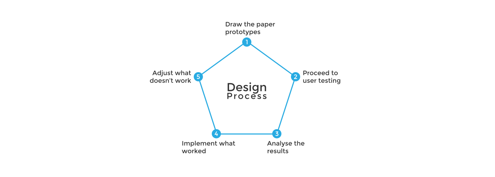

Current status introduction
Le réseau social d'aujourd'hui héberge déjà des dizaines de millions de groupes basés autour d'une variété d'intérêts. Les groupes «à vendre» sont l'une des catégories les plus populaires. Dans ces groupes, les membres utilisent Facebook comme une alternative à quelque chose comme Craigslist pour la vente locale, ou comme une alternative à eBay pour vendre des objets de collection ou d'autres articles d'intérêt général, comme les livres ou l'électroniques.
Current form
Pour l'instant, la fonction «vendre» n'offre que quelques options à l'utilisateur afin de vendre son produit, comme:
- Titre
- Prix
- Location
- Description
- Photo
The mission
Notre mission est d'améliorer l'expérience utilisateur de la fonctionnalité «vendre» sur Facebook pour la version desktop. Au cours de cet atelier, se placer dans le rôle de l'utilisateur nous a permis non seulement d'apporter des améliorations, mais aussi d'ajouter de nouvelles fonctionnalités. Cettes nouvelles fonctionnalités ont été fréquemment posées par la communauté mondiale qui utilise régulièrement les groupes «à vendre». La simplicité a été priorisée par rapport à la concentration et les gens utilisent les groupes «à vendre» de manière non-optimisée. Améliorer le formulaire «Vendre quelque chose» peut résoudre de nombreux problèmes.
Architecture information and zoning preparation
Toutes les améliorations et les nouvelles fonctionnalités proposées pour les formulaires «Vendez quelque chose» sur Facebook peuvent être trouvés dans ce schéma que nous avons assemblé pendant l'atelier. Nous avons compris ce que nous devons créer, concevoir, tester et comment nous organiser. Cettes expériences ont formé notre base pour reconstruire l'architecture de l'information et s'assurer que les caractéristiques les plus importantes étaient toujours évidentes et soulignées.
Nous voulions que ce soit plus qu'une simple version de la fonctionnalité actuelle, donc nous avons ajouté de nouvelles fonctions pour améliorer l'expérience utilisateur globale de l'interface du formulaire.
first prototypes
Les premiers prototypes que nous avons créés pendant l'atelier n'étaient pas esthétiquement agréables. Ce sont des croquis en papier, mais ils sont très importants. Ils nous ont aidés à tirer des leçons de nos erreurs et à procéder à des tests utilisateurs où nous pouvions trouver encore plus d'erreurs et les corriger.
Et le cycle ne s'arrête pas ici. Nous avons conçu plus d'interfaces, nous avons testé à nouveau, mesuré les résultats et ajuster ce qui ne fonctionne pas. L'étape suivante consiste à mettre nos prototypes à l'écran.
Improvements & New Ideas
Notre première idée est basée sur des enchères. Les utilisateurs seront en mesure de mettre leur article à la vente aux enchères et ils seront également en mesure de soumissionner. Il n'y a pas de limite de temps, car les utilisateurs peuvent supprimer leur post, de sorte que leur vente aux enchères, à tout moment. Au lieu du prix régulier de l'article, ils verront un prix de départ, qui est mis en place par le vendeur. Nous avons inclus une entrée pour les utilisateurs où ils peuvent insérer un nombre, qui doit être supérieur au prix de départ, bien sûr.
Rating System
Après que l'article a été vendu, le vendeur confirmera le profil de l'acheteur et l'acheteur recevra une notification. Cela mènera à un pop-up où l'acheteur sera invité à évaluer le vendeur. Le nouveau système de notation permettra aux utilisateurs (acheteurs) d'évaluer les vendeurs, tels que mauvais, bon ou excellent. Tout est basé sur un algorithme qui calcule la note du vendeur en tenant compte des notes données. L'évaluation sera affichéa à côté du nom du vendeur entre crochets avec des couleurs. Rouge pour mauvais, orange pour bon et vert pour excellent. Cela permettra aux acheteurs de voir si le vendeur est digne de confiance ou non et d'améliorer leur expérience shopping sur Facebook.
Thanks
I would like to say thanks to all my professors for their guidance and to my team members for their dedication to this project, you’re awesome!